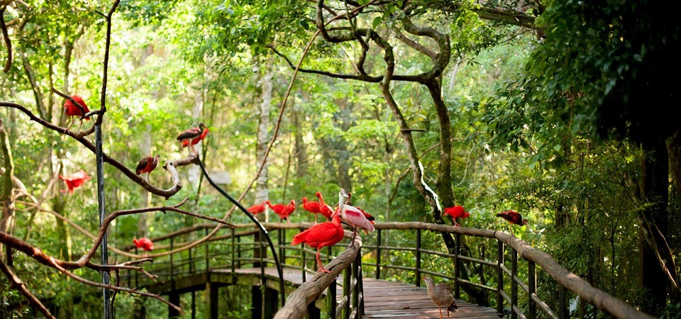

Foz do Iguaçu é um dos destinos mais visitados no Brasil e oferece atrações incríveis para visitantes de todas as idades. Por sua beleza natural, a cidade de Foz do Iguaçu automaticamente atrai
pessoas do mundo inteiro. É bastante comum ver turistas estrangeiros por todas as partes. A boa quantidade de voos domésticos para lá também é um incentivo a mais para que a cidade entre na lista
de desejos de muitos viajantes brasileiros.
Aconchegante que é, Foz do Iguaçu tem tudo para cativar seu coração já nos primeiros momentos. Os amantes da natureza precisam dividir sua atenção entre paisagens inesquecíveis, espécies raras de
animais e muito verde! Além das belíssimas Cataratas, a cidade oferece, também, atividades radicais, parques, variedade de restaurantes, passeios, hotéis sofisticados e muito mais! Sem contar a
possibilidade de fazer comprinhas no Paraguai, que podem valer muito a pena.
Cataratas do Iguaçu
As Cataratas do Iguaçu é uma daquelas atrações capazes de deixar qualquer um sem fôlego. Principal atração de Foz do Iguaçu, ela é considerada uma das 7 maravilhas naturais do mundo e
fazem jus ao título! Formadas no Rio Iguaçu, elas ficam exatamente na fronteira com a Argentina e podem ser apreciadas em dois passeios distintos nos dois países.
Do lado brasileiro há uma trilha que passa por vários mirantes e um elevador panorâmico ligando a base das quedas ao nível superior do rio. Há também passarelas, caminhos que foram
construídos para levar o turista a diversos mirantes, assim apreciando tudo de mais perto.
Marco das 3 Fronteiras
No ponto em que fazem fronteira comum, Brasil, Argentina e Paraguai estabeleceram seus limites territoriais e selaram uma integração ao construir obeliscos que passaram a ser chamados de Marco das Três Fronteiras. Cada qual tem um formato diferente e é pintado com as cores do respectivo país.
Parque das Aves

O Parque das Aves é super jovem: foi criado em 1994 com a proposta de oferecer condições de preservação ambiental e reprodução de animais. Possui uma área de 17 hectares de mata nativa, onde é possível conhecer os viveiros de aves tropicais raras e coloridas como periquitos, araras, flamingos e tucanos. Conta ainda com borboletário, viveiro de beija-flores e o setor de répteis com cobras e jacarés. Atualmente o parque tem aproximadamente 1.500 aves de 140 espécies, sendo 90% das aves de Mata Atlântica.
Mesquita Muçulmana
Em Foz do Iguaçu é possível conhecer mais sobre religiões pouco difundidas no Brasil. A mesquita muçulmana sunita Omar Ibn Al-Khattab, construída a partir de 1981, oferece visitas guiadas com uma
programação muito interessante.
Como são sunitas, ocorrem orações durante o dia – e nestes momentos não são permitidas visitas. Como na religião católica, em que as igrejas possuem um sino, a mesquita possui um chamamento,
que é feito com a própria voz humana. Guiada pelo Alcorão, a religião tem costumes diferentes daqueles com que os brasileiros estão acostumados, como o fato de homens e mulheres rezarem em espaços
separados.